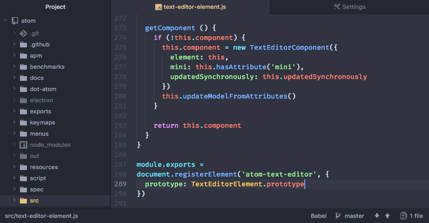
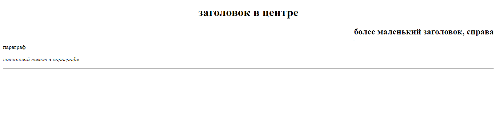
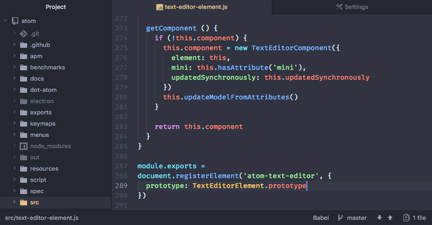
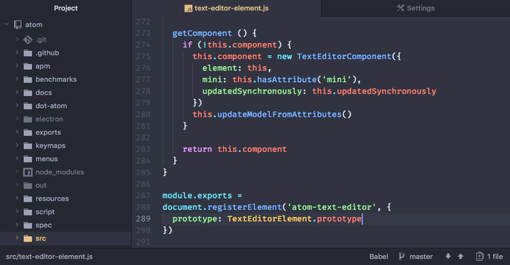

Часть 1: Введение в HTML. Установка кодового редактора, создание первой странички, форматирование текста.
Вместо предисловия....
Раньше здесь было длинное постироничное вступление и тирада о том, как плохи видеоуроки по HTML, по которым нас пытаются ему научить. В этот раз я буду краток (ну, попытаюсь).
Писать код в блокноте - НЕ нормально. Именно это стало решающим фактором в создании туториала - я не могу смотреть на то, как людей учат писать код в блокноте. Он не сохранится правильно, вероятность допустить ошибку - куда больше, и это элементарно неудобно, в сравнении с кодовыми редакторами, созданными специально для этой цели. Просто сравните:

Именно поэтому, я рекомендую вам скачать кодовый редактор Atom. Существует множество других кодовых редакторов, однако, если у вас нет желания долго во всём разбираться, то этот вариант подойдёт всем.
ПРИМЕЧАНИЕ: Чтобы создать HTML файл, нужно создать .txt файл (текстовый документ), а затем изменить его расширение с txt на html при помощи переименования. Если вы не можете изменить расширение файла, вам, вероятно, нужно включить отображение расширений файлов в Windows.
Пара слов об HTML
HTML (сокращённо от Hyper Text Markdown Language) - это язык разметки, предназначенный для создания веб-сайтой с помощью современных технологий обмена данными, известными миру как Всемирная Сеть Интернет (или же World Wide Web, для тех чей English очень Great Britain). Этот язык довольно прост в изучении, и, скорее всего, после пятнадцати минут изучения этой веб-страницы, написаной, кстати, на вышеупомянутом HTML, вы тоже сможете создавать сайты (почти) не хуже этого.
ПРИМЕЧАНИЕ: HTML - ЭТО ****НЕ**** ЯЗЫК ПРОГРАММИРОВАНИЯ. ЭТО - ЯЗЫК РАЗМЕТКИ. ЕСЛИ ВЫ ПЕРЕПУТАЕТЕ, ВАС ЗАКИБЕРБУЛЯТ ЗЛЫЕ ПРОГРАММИСТЫ (такие, как я). ПОЭТОМУ НЕ ПУТАЙТЕ, ПОЖАЛУЙСТА. Я предупредил.
Структура языка HTML. Элементы (теги), аттрибуты, форматирование.
Весь язык HTML построен на тегах - своеобразных параметров, которые компьютер учтёт при отрисовке веб-страницы. У тегов также есть аттрибуты - дополнительные свойства для них. В простейшем примере это будет выглядеть вот так:
<!-- простой тег -->
<p>Всякий фонарь - лампа, но не всякая лампа - фонарь.</p>
<!-- тег с аттрибутом -->
<p align="center">А муха - тоже вертолёт, но без коробки передач.</p>
<!-- тег без заверщающего тега -->
<img src="artem_durak.png" />
(кстати, всё, что пишется между <!-- и --> будет считаться комментарием, или, другими словами, просто будет игнорироваться при отрисовке веб-страницы)
Давайте же теперь разберем подробнее, что из этого является тегом, что аттрибутом, и т.д.
В HTML, у большинства тегов есть начало и конец. Начало тега обозначается следующим образом:
<тег>
Точно также, но с наклонной чёрточкой (/) после < обозначается и конец тега:
</тег>
Между началом и завершением тега прописывается содержание тега (к примеру, текст). То есть, чтобы вывести наш текст на страницу, нам понадобится прописать следующее в нашем файле:
<p>Да будет свет! - сказал электрик, и перерезал провода.</p>
Также, у некоторых тегов есть сокращённая форма без закрытия. Такие теги тоже встретятся нам в этом уроке, поэтому, рассмотрим их форму записи:
<br />
Как мы можем видеть, в конце у таких тегов находится наклонная чёрточка, а закрывающий тег отсутствует.
ПРИМЕЧАНИЕ: внутрь тегов также можно помещать и другие теги:
<p>флыщовалв <b>шцгарылыл</b> бебебе</p>
Также у тегов есть аттрибуты, которые в бесконечном количестве могут быть прописаны сразу после названия тега (разделяются пробелом):
Значения аттрибута всегда прописываются в кавычках. Для выполнения домашнего задания нам понадобится лишь один аттрибут - аттрибут align. Он может принимать значения left, right и center. Выглядеть это будет следующим образом:
<p align="center">текст, выровнянный по центру</p> <p align="right">текст, находящийся справа</p>
Итак, узнав о том, что такое тег и аттрибут, мы можем смело приступать к написанию нашего первого сайта!
Базовая структура HTML файла
Итак, простой HTML файл будет выглядеть примерно вот так:
<!DOCTYPE html>
<html>
<head>
<title>Название сайта</title>
</head>
<body>
<p>Тело сайта. Сюда будет писаться контент, отображаемый на странице.</p>
</body>
</html>
Теперь давайте разберём этот файл построчно.
В первой строке прописан код, определяющий тип документа:
<!DOCTYPE html>
Он даёт браузеру понять, что он работает именно с форматом HMTL, а не с каким-либо другим. Его следует писать на первой строке каждого сайта.
ПРИМЕЧАНИЕ: обратите внимание на восклицательный знак (!) перед словом DOCTYPE. Не забывайте о нём!
Далее прописывается тег HTML. Думаю, с ним все максимально ясно - он определяет начало и конец HTML-контента:
<!DOCTYPE html>
<html>
</html>
Далее добавляется тег head. В теге head будут записаны различные сведения о сайте, предназначенные браузеру - например, его название. Контент внутри тега head не будет отображаться на экране, он нужен, чтобы проинформировать браузер о нашем сайте:
<!DOCTYPE html>
<html>
<head>
<title>думаю, значение тега title объяснять не нужно - он указывает браузеру название сайта</title>
<meta charset="UTF-8">
</head>
</html>
Тег meta с аттрибутом charset и значением UTF-8 позволяет всем браузерам нормально распознавать кириллицу (русские буквы). Без этой строки внутри head, некоторые браузеры не смогут читать русские символы.
И, наконец, добавляется тег body. В него мы прописываем все визуальные элементы, такие как текст, картинки, кнопки и т.д.:
Именно внутри тега body будет происходить дальнейшая работа с сайтом.
Базовые теги, нужные начинающему
В начале нашего путешествия по безграничным просторам языка HTML мы будем работать в основном с текстом. Поэтому, предлагаю изучить основные текстовые теги прежде всего:
<p>p - paragraph, с Великобританского - параграф. сюда вставляется просто текст.</p>
<h1>h - header - заголовок. существуют от одного до 6, пропорционально становясь меньше.</h1>
<h2>заголовок поменьше.</h2>
<h3>заголовок ещё поменьше.</h3>
<h4>заголовок ещё поменьше!</h4>
<h5>заголовок, меньше моего среднего балла по биологии!</h5>
<h6>самый мелкий возможный заголовок.</h6>
<b>b - bold - жирный текст</b>
<i>i - italic - наклонный текст</i>
<u>u - underline - подчёркнутый текст</u>
<hr width="300" /> - вертикальная линия, которой, кстати, тегом width можно задать ширину (обратите внимания, этот тег не имеет закрытия!)
<br /> - перенос строки (равносилен нажатию клавиши enter на клавиатуре при обычном печатании).
<h1 align="center">а вот так, при помощи аттрибута center, можно выровнять текст по страничке.</h1>
Этого набора тегов будет вполне достаточно начинающему веб-дизайнеру чтобы приноровиться к написанию сайтов на HTML.
ПРИМЕЧАНИЕ: с полным списком тегов HTML вы можете ознакомиться здесь.
Написание собственной веб-странички
После изучения этих тегов, мы вполне можем написать собственную веб-страничку для выполнения домашнего задания по информатике. Вот как примерно это будет выглядеть:
<!DOCTYPE html>
<html>
<head>
<title>название сайта</title>
<meta charset="UTF-8">
</head>
<body>
<h1 align="center">заголовок в центре</h1>
<h2 align="right">более маленький заголовок, справа</h2>
<p>параграф</p>
<p><i>наклонный текст в параграфе</i><p>
<hr />
</body>
</html>

Заключение
Я писал это три часа, и я, честно, порядком задолбался. А редактировал под новую версию - ещё часа четыре. А мне еще остатки переделывать, и новые писать.... Вобщем, да. Всем десяток по информатике, всем ы.
 
